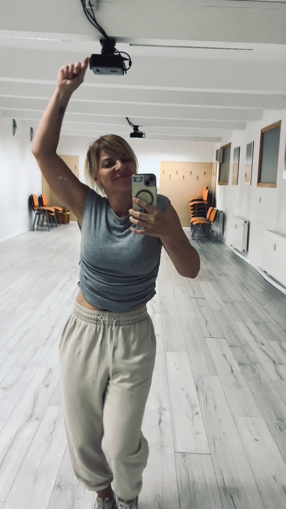

Storitve
Latinski ples · Intuitivni ples · Svoboda gibanja
O plesu
Ples je eden najnaravnejših načinov izražanja človeškega telesa — in ena najmočnejših poti do stika s seboj.
Dance is one of the most natural forms of human expression — and one of the most powerful paths to connecting with yourself.
V Studio Spirital ponujamo dve obliki plesnih delavnic. Latinski ples prinaša radost, energijo in ritem — idealen za tiste, ki iščejo živahno in zabavno vadbo z elementom socialnega gibanja. Intuitivni ples je prostor svobode, kjer ni korakov, ki bi jih bilo treba naučiti — le telo, glasba in notranje vodstvo.
At Studio Spirital we offer two forms of dance workshops. Latin dance brings joy, energy and rhythm — ideal for those seeking a lively and fun workout with a social movement element. Intuitive dance is a space of freedom, where there are no steps to learn — just the body, the music and inner guidance.
Koristi
Izboljša kardiovaskularno kondicijo, koordinacijo in ravnotežje. Latinski ples specifično krepi noge, boke in jedro telesa. Redno gibanje prek plesa vzdržuje gibljivost sklepov in mišično moč brez občutka "vadbe".
Improves cardiovascular fitness, coordination and balance. Latin dance specifically strengthens legs, hips and the body's core. Regular movement through dance maintains joint mobility and muscle strength without the feeling of a "workout".
Ples sprošča endorfine in naravno zmanjša stres. Fokus na glasbo in gibanje nas povrne v sedanji trenutek — kar je oblika gibalne meditacije. Učenje novih korakov prav tako vzdržuje kognitivno prožnost.
Dance releases endorphins and naturally reduces stress. Focus on music and movement brings us back to the present moment — a form of movement meditation. Learning new steps also maintains cognitive flexibility.
Intuitivni ples je oblika gibalne terapije — telo se giba spontano, brez pravil in ocenjevanja. To je priložnost za čustveno sproščanje, svobodo izražanja in globoko sprejemanje samega sebe.
Intuitive dance is a form of movement therapy — the body moves spontaneously, without rules or judgement. It is an opportunity for emotional release, freedom of expression and deep self-acceptance.
Storitve & cenik